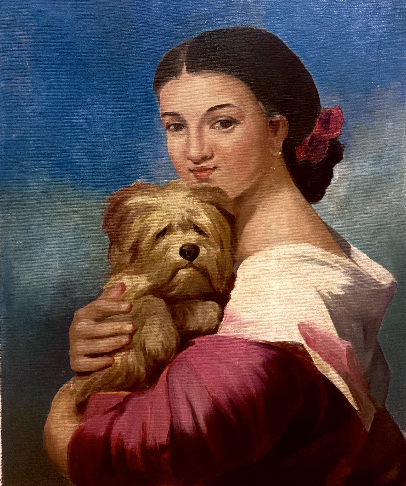

Sneha Pothuri — Acrylic Landscapes & Luminous Portraits
Layered color and textured brushwork that capture quiet, luminous moments. Originals, limited prints, and commissions welcome.

A Trusted Companion — Young woman lovingly embracing her small brown dog.